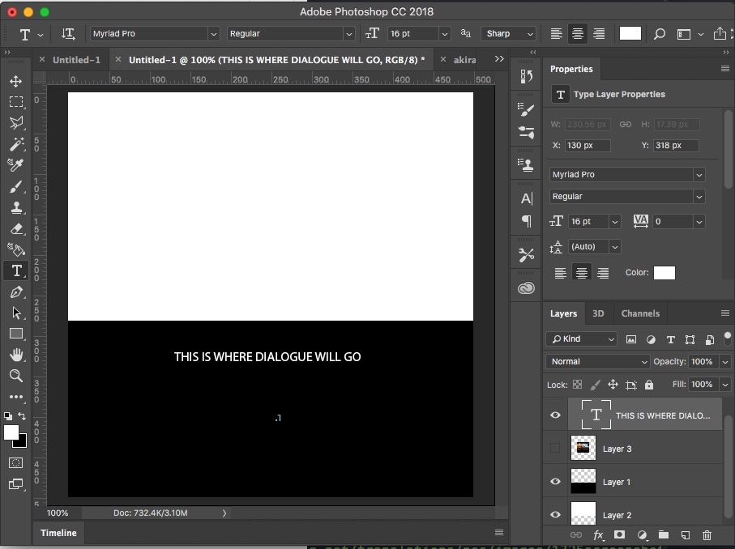

Research Site A
Of all the games released by Taito in 1987, by far the most popular was Akira. Pictured is a key scene from the game.

>
Using the Akira visual novel as a guide to how I want my game to look I started building a prototype intro screen to mirror certain aspects of the pictured scene I've included from the orginal famicom Akira VN release.